Xiaomi OneVL: One-Step Latent Reasoning and Planning with Vision-Language Explanation
这份报告把 OneVL 拆成一个核心命题：自动驾驶 VLA 里的“思考”不一定要逐 token 写出来；只要 latent token 被语言 CoT 和未来视觉 token 双重监督，它可以在推理时保持 answer-only 的速度，同时比显式 CoT 更准。
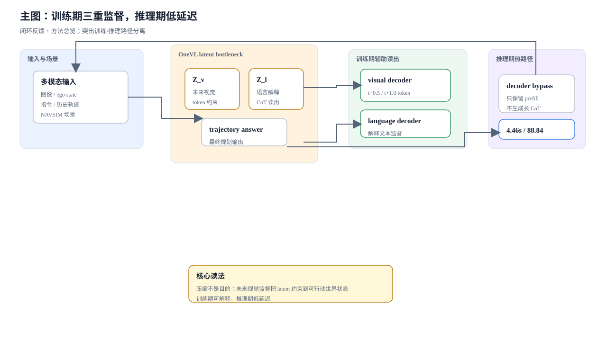
0. 先给结论：OneVL 真正在改什么
OneVL 不是把已有 VLM 接一个轨迹头那么简单。它把显式推理链拆成两类 latent token：视觉 latent 承担未来场景动力学，语言 latent 承担可读 CoT 的压缩表征。训练时两个 auxiliary decoder 都在场，分别把 latent hidden states 还原为未来视觉 token 和文字推理；推理时两个 decoder 都被丢弃，只把 latent token 预填到 prompt 中，主模型并行吃掉这些 token 后直接生成轨迹答案。
这使论文的核心 claim 变成一个可审计的三段式：第一，普通 latent CoT 在驾驶上失败，因为缺少任务相关监督；第二，世界模型式视觉监督和语言解释监督能把 latent 从“黑箱压缩槽”变成“可被解码的驾驶状态”；第三，prefill 让这些 latent 不参与逐 token 自回归，因此延迟约等于 answer-only。
| 术语 | 含义 | 在 OneVL 中的作用 |
|---|---|---|
| VLA | Vision-Language-Action，把视觉、语言指令和动作预测放进同一模型接口 | OneVL 的上层任务范式 |
| Latent CoT | 把推理链压缩成连续/隐式 latent，而不是逐 token 输出文本 | OneVL 要证明 latent 不必牺牲精度和解释性 |
| Explicit CoT | 显式生成完整文字推理链，再输出轨迹 | 性能基线，慢但语言解释质量最高 |
| Prefill | 把 latent token 作为提示上下文一次性并行处理 | OneVL 低延迟的关键 |
| Visual auxiliary decoder | 从视觉 latent hidden states 预测未来帧视觉 token | 世界模型监督来源 |
| Language auxiliary decoder | 从语言 latent hidden states 重构文字 CoT | 解释性监督来源 |
| Qwen3-VL-4B | 4B 级视觉语言 backbone | 主模型，推理部署时保留 |
| Emu3.5 IBQ | 离散视觉 tokenizer/decoder | 未来帧 visual token 监督与可视化解码 |
| NAVSIM PDM | Non-reactive driving planning score | 主 benchmark 指标 |
| ADE/FDE | 平均/终点轨迹误差 | ROADWork、Impromptu、Alpamayo-R1 指标 |
| MLP head | 从 latent hidden state 回归 waypoint 的轻量头 | 部署降延迟版本 |
| Stage training | 预训练/主 VLM warmup/辅助解码器 warmup/联合调优 | 消融显示是稳定训练的必要条件 |
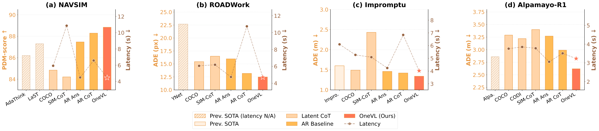
这张图是论文的总 claim：OneVL 同时站在高精度与低延迟角落。解读时要注意它比较的是 SFT 设定下的 VLA/latent CoT 方法，不等价于证明闭环驾驶安全性。
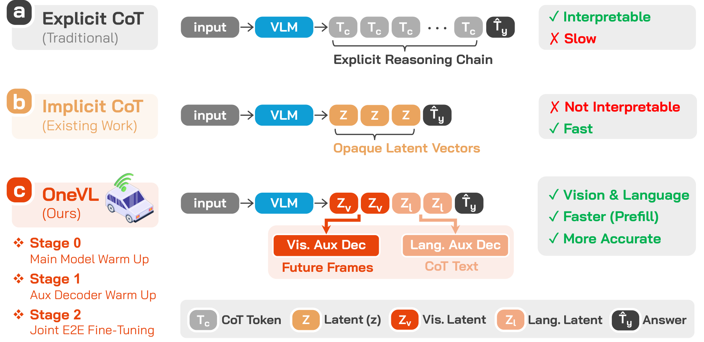
这张范式图最关键的不是“三种 CoT”标签，而是训练/推理路径的分离：训练阶段可解释 decoder 约束 latent，推理阶段 decoder 不上车。
1. 研究问题：latent CoT 在驾驶里为什么原本不够用
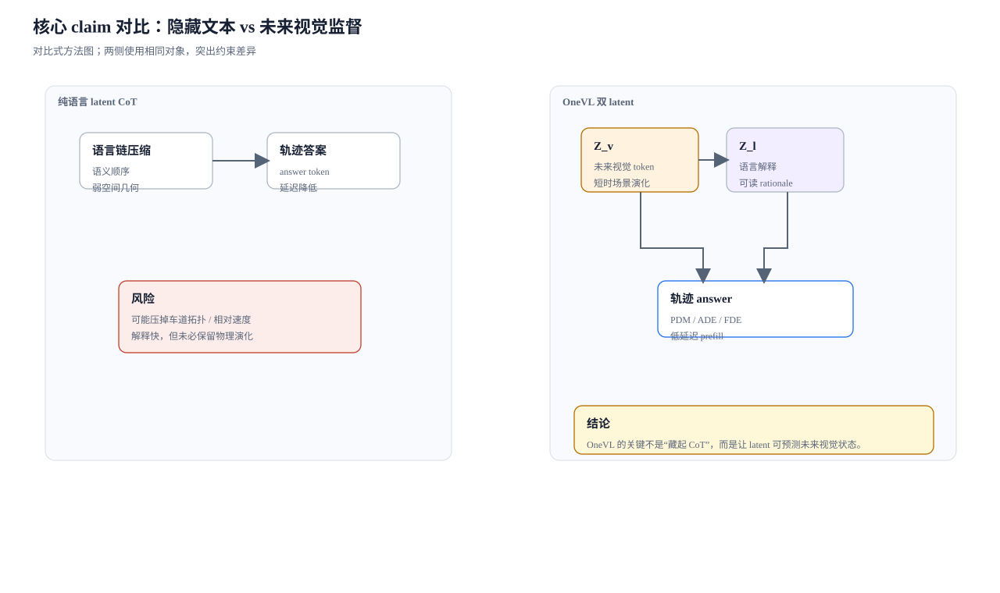
论文把问题定位在 VLA 自动驾驶的一个矛盾上：显式 CoT 可解释但慢，answer-only 快但缺少中间监督，通用 latent CoT 本该快，却在驾驶任务中低于 answer-only 甚至显著低于显式 CoT。NAVSIM 表里 COCONUT、CODI、SIM-CoT 的 PDM 分别是 84.84、83.92、84.21，全部低于 AR Answer 的 87.47，这说明“把语言推理压进 latent”这个通用技巧直接迁移到轨迹预测并不成立。
OneVL 对这个失败给出的解释是 supervision mismatch：驾驶规划不是纯语言推理题，latent token 如果只从最终轨迹损失或一般语言压缩中学习，很容易变成不可解释的瓶颈；它缺少与场景未来状态绑定的监督。因此 OneVL 用未来帧视觉 token 预测提供密集世界模型信号，用 CoT 文本重构提供语言解释信号。
| 核心主张 | 论文证据位置 | 我的审计判断 |
|---|---|---|
| latent CoT 原始迁移在自动驾驶上失败 | Intro + Table main_results | NAVSIM 多个 latent CoT baseline 同时低于 AR Answer，是强证据 |
| 双辅助 decoder 能让 latent 具备语言和视觉解释 | Sec. 3 architecture + explanation quality table + visual CoT figure | 可解码性成立，但解释质量低于显式 CoT |
| prefill 使推理速度接近 answer-only | Architecture + latency tables | 从 4.46s vs 4.49s 看 NAVSIM 成立；其他 benchmark 也接近 |
| 视觉世界模型监督提高泛化 | Ablation + qualitative visual CoT | w/o visual decoder -0.87 PDM，w/o staged train 崩溃，是中强证据 |
2. 方法机制：两个 latent 通道不是装饰
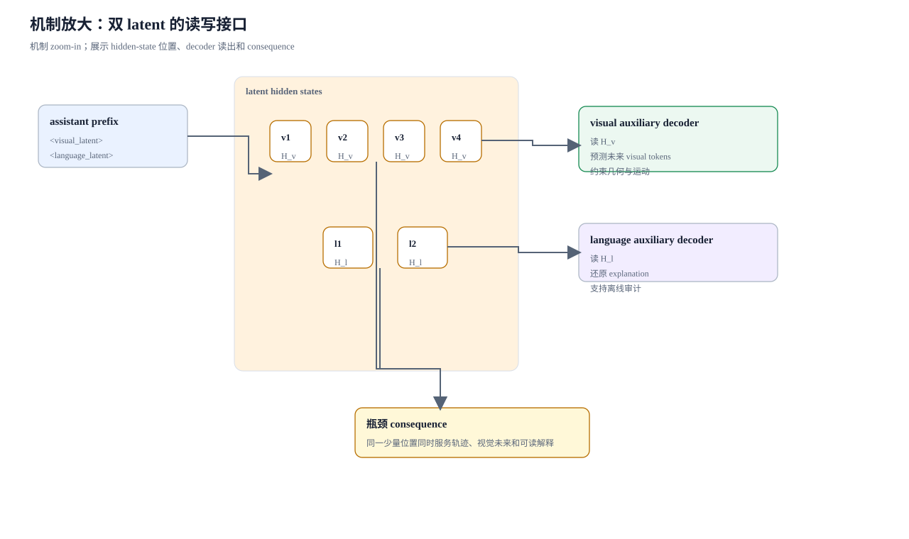
OneVL 的输入是图像和结构化驾驶文本，输出序列中被插入视觉 latent token、语言 latent token 和轨迹 answer token。主 VLM 产生这些位置上的 hidden states 后，视觉 latent 的 hidden states 送入视觉辅助 decoder，语言 latent 的 hidden states 送入语言辅助 decoder。注意这里不是把 decoder 输出作为最终答案的一部分，而是把 decoder 当作训练时的可解释监督器。
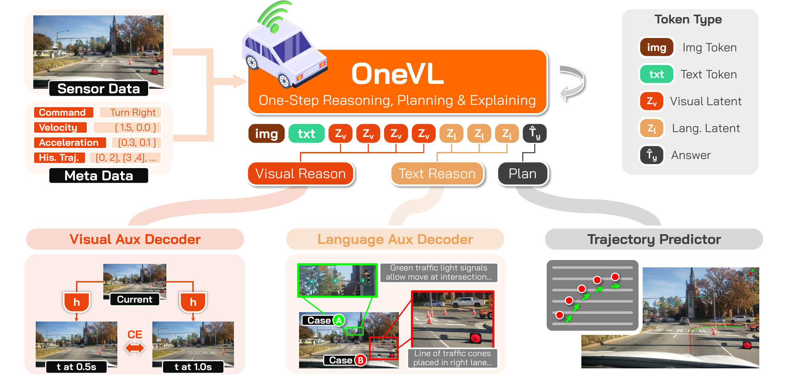
架构图里下方的 hidden state 路由是读懂 OneVL 的关键：H_v 和 H_l 都来自主 VLM，但监督目标不同。视觉分支绑定 t+0.5s/t+1.0s 未来帧 token；语言分支绑定 CoT 文本。
机制深挖：为什么视觉 decoder 比语言 decoder 更像关键部件
消融里去掉视觉 decoder 后 PDM 从 88.84 降到 87.97，去掉语言 decoder 后降到 88.53。二者都有效，但视觉 decoder 的影响更大。原因很直接：自动驾驶轨迹预测的核心不只是解释为什么转弯，而是判断未来空间可通行性、动态障碍和道路拓扑演化。视觉 token 预测比文字 CoT 更接近这些状态变量。语言 decoder 的主要价值是让 latent 可读、可审查，并通过文本 CoT 给模型一个更稳定的语义分解目标。
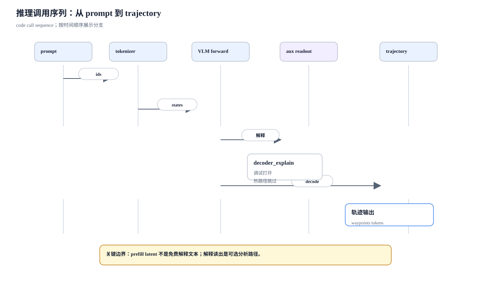
机制深挖：prefill 不是减少 token 数这么简单
显式 CoT 慢，是因为中间推理文本要自回归生成，每个 token 都依赖前一个 token。OneVL 的 latent token 虽然也出现在序列中，但它们在推理时被直接预填为固定 token 块，模型只需要并行计算它们对应的 hidden states，再自回归生成轨迹 answer。因此延迟主要取决于最终 answer token，而不是 reasoning token 长度。
3. 数学与算法重构：从三个交叉熵到一个训练目标
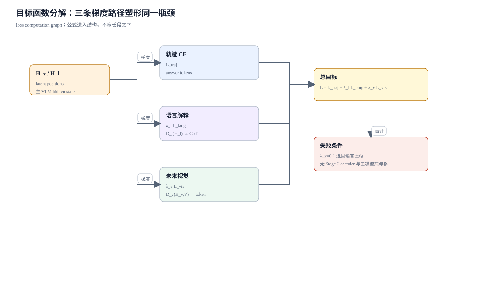
论文的数学不复杂，但容易被误读成“多任务 loss 堆叠”。更准确地说，它定义了三个不同层级的监督：主轨迹答案损失 L_c 保证规划输出；语言辅助损失 L_l 迫使语言 latent 能还原 CoT；视觉辅助损失 L_v 迫使视觉 latent 能预测未来帧 token。总损失是加权和，其中 lambda_l=1.0，lambda_v=0.1。
独立推导可以从最大似然出发：如果主答案、语言 CoT、未来视觉 token 被视为三个条件生成目标，那么联合训练的负对数似然可以分解为三项条件交叉熵。论文并没有声称三项目标独立，只是在优化上用线性加权近似多目标训练。这个推导能解释为什么 lambda_v 小于 1：视觉 token 序列长且来自离散 tokenizer，如果权重过大，模型会优先优化未来帧 token 复原而不是规划。
核心公式独立推导
前提 1：主 VLM 看到输入 x 和 latent prompt 后生成轨迹答案 y，最大化 P(y|x,z)。前提 2：语言辅助 decoder 看到语言 latent 表征 z_l 后生成 CoT token 序列 c。前提 3：视觉辅助 decoder 看到视觉 latent 表征 z_v 后生成未来视觉 token 序列 v。
若把三项目标写成 token 级条件概率，L_l 和 L_v 都是 teacher-forcing 交叉熵：每一步预测当前 token，条件包括 latent 表征和之前的目标 token。论文省略的步骤是从 token 序列概率分解到求和形式，即 P(c|z_l)=prod_i P(c_i|z_l,c_{<i})。这一步是标准自回归分解，没有额外理论技巧。
推导限制：该 loss 并不保证 latent 形成因果世界模型，也不保证未来视觉 token 与真实物理状态一一对应。它只证明训练信号鼓励 latent 包含足够信息以被 decoder 还原。是否形成可泛化的驾驶表征，需要靠 ablation 和跨 benchmark 结果验证。
| 变量/模块 | 数学角色 | 工程含义 |
|---|---|---|
| Z_l | 语言 latent 表征 | 压缩 CoT 的隐空间载体 |
| Z_v | 视觉 latent 表征 | 压缩未来场景动态的隐空间载体 |
| D_l | 语言 auxiliary decoder | 训练时重构 CoT，推理可关闭 |
| D_v | 视觉 auxiliary decoder | 训练时预测未来视觉 token，解释时可解码为图 |
| lambda_l/lambda_v | 多任务权重 | 平衡解释/世界模型监督与主规划目标 |
4. 训练拓扑：Stage 不是小细节，而是成败条件
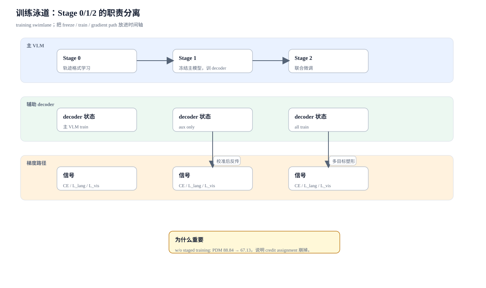
论文训练流程包含 preliminary visual decoder pretraining、Stage 0 主 VLM warmup、Stage 1 冻结主模型只训练辅助 decoder、Stage 2 联合 fine-tuning。这个顺序背后的工程逻辑是防止辅助 decoder 在主模型尚未稳定时牵引 backbone，或者在 decoder 尚未学会解码时用噪声监督破坏 latent。
| Stage | 训练对象 | 论文配置 | 作用 |
|---|---|---|---|
| Visual aux pretraining | 视觉辅助 decoder | 13040 steps, batch 256, lr 1e-4 | 先让 visual decoder 学会从视觉条件预测未来 token |
| Stage 0 | ViT / LLM / aligner | 2 epochs, batch 64, lr 4e-5 | 让主 VLM 适配驾驶轨迹答案 |
| Stage 1 | 语言与视觉辅助 decoder | 1 epoch, main VLM frozen | 在固定 backbone 上对齐 decoder |
| Stage 2 | 全部模块 | 5 epochs, lr 1e-4 | 最终把主任务和双辅助监督联合收敛 |
消融结果里 w/o staged train 只有 67.13 PDM，降幅达到 21.71。这比任何单个 decoder 的贡献都大，说明 OneVL 的关键不是“加两个 decoder”这么机械，而是如何让 decoder 的监督在训练早期不过度干扰主 VLM。
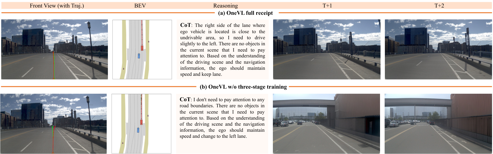
这张消融图比表格更直观：没有正确 staged training 时，visual auxiliary decoder 预测的未来帧会变成记忆化伪影。它说明视觉解释不是自然出现的，而是训练拓扑约束出来的。
5. 实验证据审计：哪些 claim 强，哪些要打折
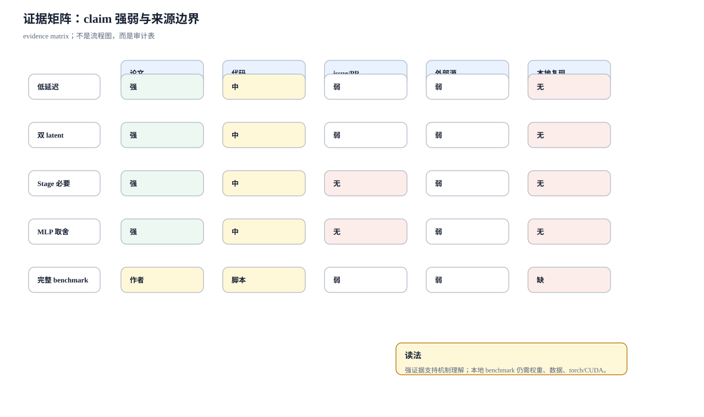
| Benchmark | Metric | OneVL | Latency | 证据解读 |
|---|---|---|---|---|
| NAVSIM | PDM | 88.84 | 4.46s | 超过 AR CoT 0.55，速度快 2.12s |
| ROADWork | ADE/FDE | 12.49 / 28.80 | 4.71s | 相对 AR CoT 更准且约 2.28x 快 |
| Impromptu | ADE/FDE | 1.34 / 3.70 | 4.02s | 四个 1-4s L2 点均优 |
| Alpamayo-R1 | ADE/FDE | 2.62 / 7.53 | 3.23s | FDE 略输 Cosmos-Reason 7.42 |
| 方法 | NAVSIM PDM | Latency | 审计备注 |
|---|---|---|---|
| AR Answer | 87.47 | 4.49 | 无解释，速度强 |
| AR CoT+Answer | 88.29 | 6.58 | 显式语言 CoT，慢 |
| COCONUT | 84.84 | 5.93 | 通用 latent CoT 迁移到驾驶失败 |
| CODI | 83.92 | 8.62 | latent CoT 但慢且低分 |
| SIM-CoT | 84.21 | 10.86 | 语言可解释但低分 |
| OneVL | 88.84 | 4.46 | 速度约等于 answer-only，精度超过显式 CoT |
| 实验项 | PDM | 相对 full | 结论 |
|---|---|---|---|
| w/o visual decoder | 87.97 | -0.87 | 世界模型视觉监督贡献明确，但不是唯一来源 |
| w/o language decoder | 88.53 | -0.31 | 文本解释监督贡献较小但稳定 |
| w/o staged train | 67.13 | -21.71 | 训练拓扑是硬条件，不是工程细节 |
| full | 88.84 | 0 | 双辅助 + 分阶段训练共同成立 |
| 证据等级 | 论文给出的证据 | 我的判断 |
|---|---|---|
| 强证据 | 四个 benchmark 均列出 answer-only、explicit CoT 和 latent CoT baseline | 支持“精度/速度 Pareto”主张 |
| 弱证据 | Text CoT quality 低于 AR CoT 78.27 vs 76.13 | 语言解释不是完全等价，只是接近 |
| 未充分证据 | 闭环真实车安全、交互式仿真 reactive feedback | NAVSIM 是 non-reactive，不能外推为闭环控制充分验证 |
| 部署权衡 | MLP head 86.83 PDM/0.24s vs AR 88.84/4.46s | 低延迟版本有精度折损，需按产品预算选择 |
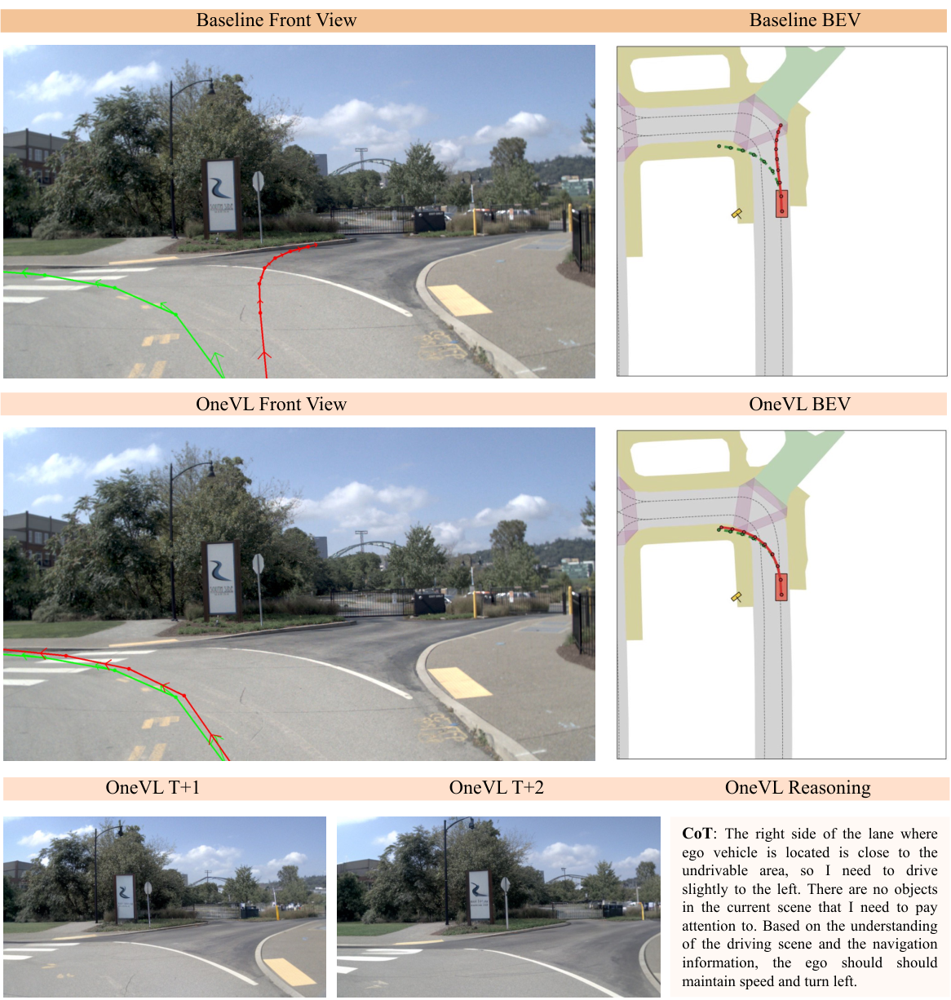
NAVSIM 可视化说明轨迹与前视图叠加，但它是 non-reactive benchmark，不能证明闭环避险。
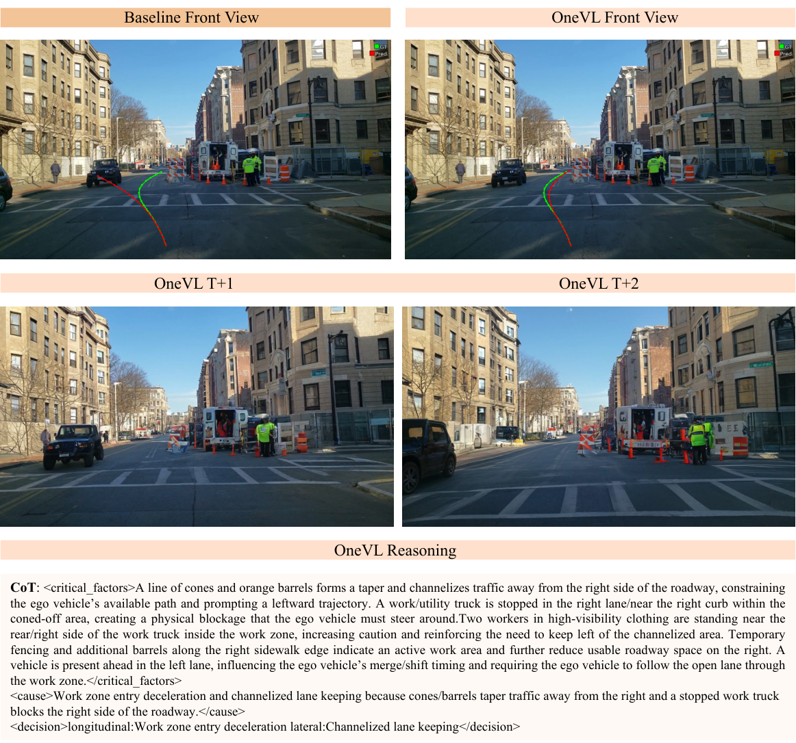
ROADWork 是施工区域，能测试异常道路拓扑；OneVL 低 ADE/FDE 说明视觉世界监督对 work zone 有帮助。
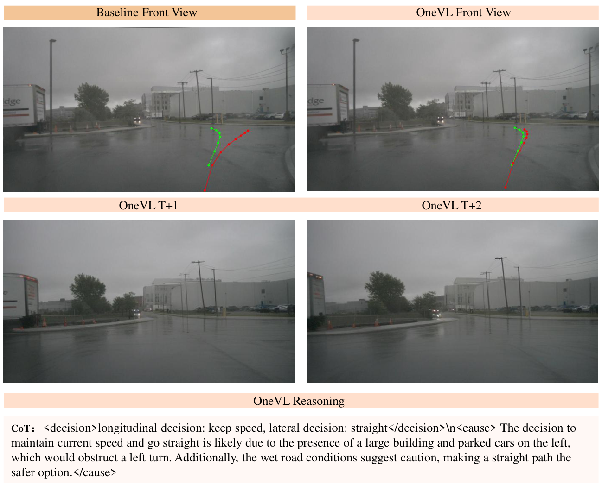
Impromptu 关注开放词汇/多样场景，OneVL 的 L2 误差优势说明方法不只贴合 NAVSIM。
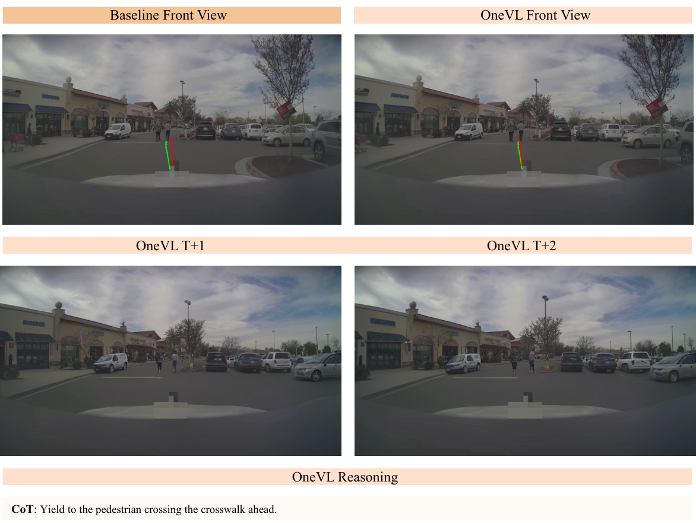
Alpamayo-R1 上 OneVL ADE 最优但 FDE 略输 Cosmos-Reason，提示长尾终点预测仍有改进空间。
反驳视角：为什么不能只看 88.84
第一，OneVL 的显式语言解释质量平均分 76.13，低于 AR CoT 的 78.27。它恢复了大部分解释能力，但不是完全等价。
第二，NAVSIM 的 PDM-score 是 non-reactive planning benchmark，无法覆盖交互闭环、对抗车辆和真实执行器噪声。
第三，MLP head 把延迟降到 0.24s 但 PDM 降到 86.83。如果产品目标是实时部署，不能直接拿 full AR OneVL 的 88.84 当部署性能。
6. 横向定位：OneVL 在 latent reasoning / world model / VLA 的交叉点
Semantic Scholar 查询到该论文当前 citationCount=1、influentialCitationCount=0；这符合 2026 年新论文状态。其 top references 混合了 Transformer/VLM 基础、latent CoT、世界模型和自动驾驶 benchmark。TLDR 认为 OneVL 是第一个在四个 benchmark 上超过 explicit CoT 的 latent CoT 方法，并把原因归结为 world model supervision。
| 参考论文/方向 | citationCount | OneVL 借用的东西 |
|---|---|---|
| Attention is All you Need | 180672 | 基础影响力参考 |
| KITTI | 10437 | 基础影响力参考 |
| Visual Instruction Tuning | 9861 | 基础影响力参考 |
| nuScenes | 8260 | 基础影响力参考 |
| Qwen-VL | 2116 | 基础影响力参考 |
| 飞书已有文档/方法族 | 核心路线 | 与 OneVL 的差异 |
|---|---|---|
| Alpamayo-R1 | 显式 reasoning/action 长尾驾驶 | OneVL 用 latent+aux decoder 试图保留解释但降低延迟 |
| DynVLA | 学习世界动态用于 action reasoning | OneVL 的世界模型不是独立 rollout planner，而是视觉 latent 的辅助监督 |
| LAW / latent world model | 用 latent world model 增强端到端驾驶 | OneVL 把未来视觉 token 预测压到训练监督中，推理时不保留模型 |
| AdaThinkDrive | 自适应思考/推理预算 | OneVL 的路径是固定少量 latent prefill，不走可变长思考 |
| DriveVLA-W0 / world-model scaling | 密集世界模型监督缓解动作标签稀疏 | OneVL 给出同类结论但落在 latent CoT 解释性上 |
外部社区层面，官方项目页和 GitHub README 基本复述了论文 claim；Hugging Face papers/collection 页面本轮访问超时，不能作为已读证据；CSDN 的一条二手摘要把 OneVL 描述成通用视觉任务模型，这与论文明确的 autonomous driving trajectory prediction 定位不一致，说明这篇论文的传播中容易丢失“驾驶 VLA / 轨迹预测 / 世界模型监督”三个限定条件。
7. 代码与复现：主仓库是推理闭环，不是完整训练闭环
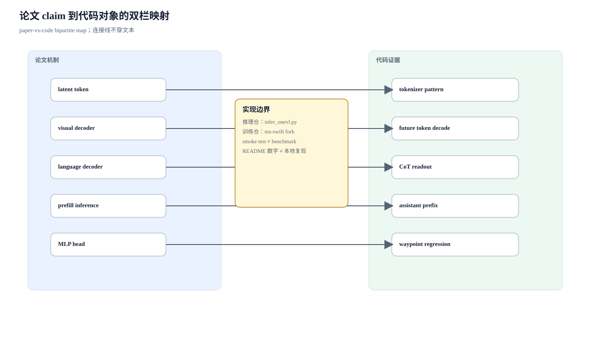
| 模块 | 论文主张 | 代码证据 | 回填状态 |
|---|---|---|---|
| Latent token placement | 论文：4 visual + 2 language latent tokens | run_infer.sh:26-39; infer_onevl.py:676-682 | 一致 |
| Latent position detection | 按 latent 标记从 hidden states 取位置 | infer_onevl.py:170-177 | 推理代码显式实现 |
| Aux decoder loading | 训练后保留权重供解释，但推理规划可丢弃 | infer_onevl.py:215-225 | 解释模式需要 checkpoint prefix |
| Visual explanation | 视觉辅助 decoder 预测 visual token，再转图 | infer_onevl.py:489-505; scripts/visualize_predict_image_tokens.py:40-91 | 代码提供后处理脚本 |
| MLP deployment | MLP head 将轨迹生成降为回归 | infer_onevl.py:636-643; scripts/infer_navsim_mlp.sh:37-51 | 对应 0.24s 版本 |
| Training implementation | 论文有四阶段训练表 | README 指向 GeorgeLuImmortal/OneVL_training | 主仓库不是完整训练仓，需另取训练仓 |
官方仓库的推理代码较完整：latent token prefix、辅助 decoder 解释、visual token 解码、ROADWork/Impromptu/AR1 评估和 NAVSIM 格式转换都能找到。但训练实现被 README 指向另一个 OneVL_training 仓库；因此仅凭 xiaomi-research/OneVL 主仓库不能复现实验训练，只能做模型权重推理、解释可视化和部分 benchmark 评估。
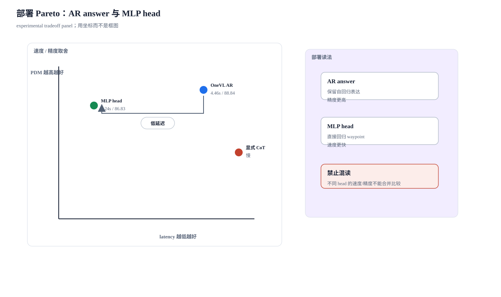
复现 cheatsheet
环境：Python 3.10+，transformers 4.57.0，torch 2.10.0，Qwen3-VL 支持，视觉解释还需要 Emu3.5 VisionTokenizer 权重。
核心参数：NUM_LATENT=2，NUM_LATENT_VIS=4，MAX_NEW_TOKENS=1024；NAVSIM MLP head 使用 FLOAT_HEAD_TYPE=mlp，输出维度 24，即 8 waypoints * 3。
评估：ROADWork、Impromptu、AR1 可用 eval_results.py 直接评估；NAVSIM 需要先 convert_to_eval.py，再用官方 NAVSIM v1.0 pipeline。
复现风险：训练 code 与 inference repo 分离，模型权重和训练数据授权、NAVSIM 官方环境、Emu3.5 tokenizer 权重路径都会成为实际阻塞点。
8. 局限、失败条件与更强基线
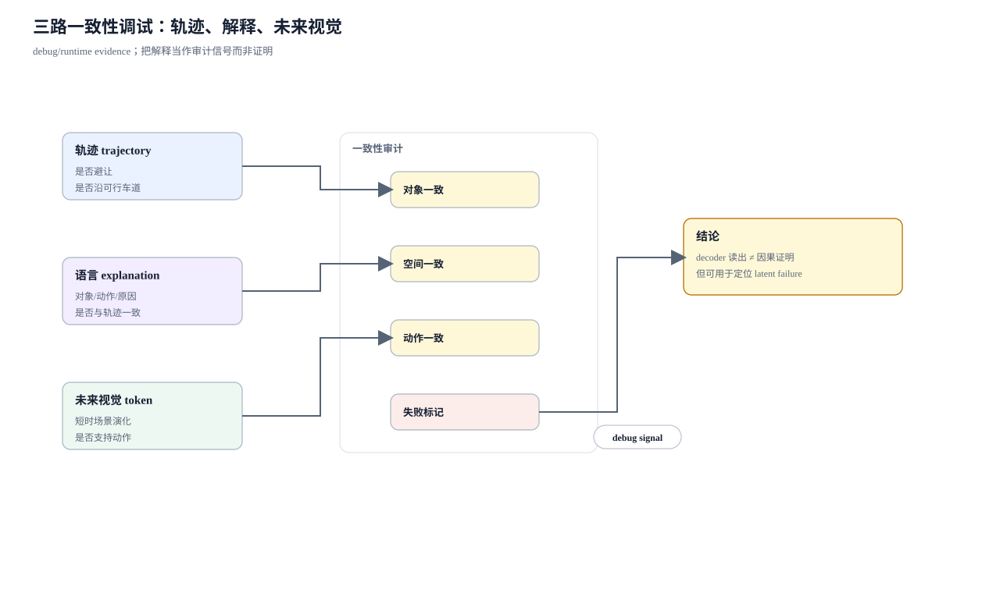
OneVL 的最大局限是它把“可解释 latent”定义为可被辅助 decoder 还原，而不是人类可直接检验 latent 的因果含义。视觉 decoder 能生成未来帧 token，不代表 latent 内部按物理状态变量分解；语言 decoder 能生成 CoT，不代表轨迹决策真正依赖这些文字因果链。
| 潜在失败条件 | 为什么会失败 | 应如何验证 |
|---|---|---|
| 闭环交互场景 | Non-reactive benchmark 不反馈 ego 行为对其他交通体的影响 | CARLA/nuPlan reactive closed-loop 或真实车回放 |
| 极端长尾天气/夜间施工 | 未来帧 token 预测可能依赖训练分布纹理 | WorldLens/Corner case 分层评估 |
| 解释与规划不一致 | 语言 decoder 只是从 latent 还原文字，不保证文字是决策因果链 | 遮挡/反事实干预 latent 后看轨迹与解释是否同步变化 |
| MLP 低延迟部署 | 0.24s head 损失 2.01 PDM | 在目标平台上测 full AR 与 MLP head 的安全指标差异 |
三个理论反驳
反驳 1：如果未来视觉 token 的预测质量与规划目标弱相关，那么视觉 auxiliary decoder 只是在学 reconstruction，而不是驾驶动力学。移除的假设是“未来视觉 token 是规划充分统计量”。
反驳 2：如果 CoT 文本本身来自模板化标注或弱 teacher，那么语言 auxiliary decoder 可能只学到解释风格，不学到可迁移 reasoning。移除的假设是“文字 CoT 含有真实决策因果结构”。
反驳 3：如果 benchmark 的 latency 主要由输出长度控制，那么 OneVL 的速度优势可能来自 answer 格式短，而不是 latent 本身更优。需要对相同 answer 格式、相同 decoding budget 做硬件一致性测量。
9. 逐模块深读：把 OneVL 当作一个训练约束系统，而不是单个模型
9.1 Latent token interface 的真实约束
OneVL 的 latent token interface 有一个容易被忽略的工程选择：它没有新增不可见的连续变量，而是使用现有 vocabulary 里的标记块来定位 latent 区间。这样做的收益是推理代码可以保持标准 VLM token 流，checkpoint 与 tokenizer 的兼容性更高；代价是 latent 的表达能力并不是“无限连续记忆槽”，而是由这些 token 位置上的 hidden states 承担。换句话说，token 本身只是定位符，真正被监督的是该位置经过 VLM 计算后的 hidden state。
这也解释了为什么代码里要专门做 latent position detection。`infer_onevl.py:170-177` 不是普通字符串处理，而是在原始 vocabulary token 序列里定位 visual/text latent block 的精确位置。辅助 decoder 需要从这些位置抽取 hidden state；如果 tokenization 变动、特殊标记被拆分、或 prompt 模板和训练不一致，decoder 读到的 hidden state 就会偏移。这是复现时很容易出错的隐藏依赖。
从表征学习角度看，OneVL 的 latent token 像一个被多重约束的 bottleneck：主轨迹损失要求它对 answer 有用，语言 decoder 要求它能还原文字 reasoning，视觉 decoder 要求它能还原未来场景 token。这个 bottleneck 的价值不在于压缩本身，而在于压缩目标被任务化了。COCONUT/CODI/SIM-CoT 在驾驶上低于 AR Answer，说明“压缩推理链”这个抽象目标不足以产生驾驶可用 latent；OneVL 的关键是让压缩对象变成未来视觉和驾驶解释。
9.2 视觉辅助 decoder 的世界模型边界
视觉辅助 decoder 预测的是未来帧的 visual token，而不是显式 3D occupancy、BEV flow 或 agent trajectories。因此它更准确的名字是 weak visual world-model supervision，而不是完整 world model planner。它通过 Emu3.5/IBQ 这样的离散视觉 token space，把未来图像压成可预测的离散序列，使 VLM hidden states 被迫携带未来场景外观、道路结构和动态对象线索。
这种设计的优点是监督密度高：单条样本的未来帧 token 比最终轨迹坐标提供更多局部视觉约束。它还绕开了显式建模所有交通体状态的复杂标注需求。缺点同样明显：future image token 对规划是否充分没有理论保证。视觉 token 可能主要重构纹理、光照或背景，而不是影响轨迹的关键对象；如果 tokenizer 对小目标或交通灯状态不敏感，视觉辅助监督也会丢失这些决策变量。
论文用 Fig. ablation_visual_cot 试图支撑视觉 decoder 的有效性：完整训练下未来帧保持场景一致，错误训练下出现记忆化伪影。这个证据说明 staged training 能避免 decoder 过拟合，但还不能证明 decoder 生成的是规划因果状态。更强验证应当做反事实：遮挡一个关键障碍物、改变红绿灯或施工锥桶，再观察 visual latent 解码和轨迹是否同步变化。
9.3 语言辅助 decoder 的解释性边界
语言辅助 decoder 把 language latent hidden states 解码回 CoT 文本，它给 OneVL 带来两层价值。第一层是训练价值：让 latent 学到与显式 reasoning 文本相关的语义结构。第二层是审计价值：推理后可以打开 decoder 生成文字解释，帮助人检查模型为什么给出该轨迹。
但这两层价值不等同于因果解释。语言 decoder 的输出是从 latent 重构出来的文本，它可能是 post-hoc rationalization，而非真正决定轨迹的因果链。论文的 explanation quality 表显示 OneVL avg 76.13，接近但低于 AR CoT 的 78.27；这说明它恢复了大部分可读性，但仍存在语义细节损失。尤其在安全关键场景，解释稍弱可能意味着漏掉关键危险对象、优先级判断或交通规则描述。
因此这份报告建议把 OneVL 的语言解释看作“latent 可读性 probe”，而不是“安全证明”。如果用于工程诊断，可以比较 language aux decoder 的解释与 visual aux decoder 的未来帧是否一致：文字说前方施工需要绕行，视觉 token 解码是否也显示施工区域；文字说保持车道，预测轨迹是否真的不越线。三者一致时解释更可信，不一致时应优先暴露给 reviewer。
9.4 MLP deployment head 的取舍
OneVL 论文和 README 都强调 full AR OneVL 在 NAVSIM 达到 88.84 PDM / 4.46s，而 MLP head 变体达到 86.83 PDM / 0.24s。这个结果对产品部署非常重要，因为它把 OneVL 分成两个模式：研究模式用 autoregressive answer 追求最高分并保留更完整解释；部署模式用 latent hidden state 接 MLP 直接回归 waypoints，把延迟压到实时系统更可接受的范围。
这不是免费午餐。MLP head 比 full AR 少了 2.01 PDM，说明自回归答案仍携带有用的序列建模能力。若部署目标是高速闭环控制，0.24s 可能比 88.84 的离线分数更有价值；若目标是 benchmark SOTA 或离线规划，full AR 更强。工程上不能简单说 OneVL 延迟就是 4.46s 或 0.24s，而要明确使用哪个 head、是否启用解释 decoder、是否跑 visual decoding 后处理。
代码也支持这个分歧：`infer_onevl.py:636-643` 的 float_head_type 只支持 mlp，并明确 flow-matching head unsupported；`scripts/infer_navsim_mlp.sh:37-51` 仍保留 language/visual explanation toggles。这意味着低延迟部署和解释生成可以组合，但解释生成本身会增加额外计算，不应混入主轨迹 latency 统计。
10. 实验读法：从结果表反推作者的论证链
10.1 NAVSIM 不是唯一证据，但它是最关键证据
NAVSIM 表承担了论文最强的 claim：OneVL 是 latent CoT 中唯一同时超过 AR CoT 和 answer-only 的方法。这个 claim 之所以有力度，是因为作者把三类基线放在同一张表：已有 VLA/自适应思考方法、Qwen3-VL 4B 下的 AR Answer/AR CoT、以及通用 latent CoT 方法。这样可以排除两个简单解释：不是因为模型更大，也不是因为只比较了弱 baseline。
不过 NAVSIM 的限制也必须同时读出来。它是 data-driven non-reactive benchmark，指标 PDM 关注规划轨迹与规则/舒适性等综合评分，但场景不会因为 ego 动作产生新的交互反馈。OneVL 在这里的优势说明它学到了更好的离线规划表示；它不直接说明模型在真实交通互动中能处理抢行、礼让、插队或多车博弈。
最值得注意的是 AR Answer 87.47 / 4.49s 与 OneVL 88.84 / 4.46s 的对比。二者延迟几乎相同，但 OneVL 高 1.37 PDM。这是 prefill latent 的核心证据：latent token 不带来显式 CoT 的自回归延迟，却能提供类似中间推理的表征收益。如果只看 OneVL vs AR CoT 的速度差，容易误以为优势来自少生成文本；OneVL vs AR Answer 才真正说明 latent prefill 增加了有效信息。
10.2 ROADWork 和 Impromptu 验证的是分布外韧性
ROADWork 关注施工区，场景包含临时锥桶、路障、工区改道等普通自动驾驶数据中较少出现的结构。OneVL 在 ROADWork 上 ADE 12.49、FDE 28.80，优于 AR CoT 的 13.18/29.98，并且 latency 4.71s 显著低于 10.74s。这里支撑的是视觉世界监督对异常道路拓扑有帮助，而不是单纯 NAVSIM 调参。
Impromptu 则偏开放场景与 nuScenes 轨迹预测式评估。OneVL 的 1.34 ADE、3.70 FDE 比 AR Answer、AR CoT 和 latent CoT baselines 都好。尤其 SIM-CoT 在 Impromptu 上 2.43/6.10 明显落后，说明通用 supervised implicit CoT 在视觉驾驶上的压缩可能丢失关键空间信息。
这两个 benchmark 合在一起支持“latent 被视觉未来监督后更泛化”的主张。但还缺一类实验：如果只换掉 visual tokenizer 或只预测 BEV/occupancy token，是否比未来 RGB token 更好？论文没有做这个替代实验，因此无法判断收益来自“未来视觉监督”本身，还是来自 Emu3.5 IBQ token space 的特殊性质。
10.3 Alpamayo-R1 暴露了强 baseline 仍有优势的角落
Alpamayo-R1 表里 OneVL ADE 2.62 最优，但 FDE 7.53 略输 Cosmos-Reason 的 7.42。这个细节重要，因为 FDE 更关注终点偏差，常反映长时规划意图是否准确。OneVL 在平均路径上更准，但终点并非绝对最好，说明 latent+visual supervision 仍可能在较长时域目标选择上输给更强的语言/世界知识 reasoning baseline。
如果要继续改进 OneVL，一个自然方向是把 visual latent 的预测时域从 0.5s/1.0s 延长到更长 horizon，或者引入多尺度 future token：近未来用于碰撞/车道保持，远未来用于意图和目标区域。当前论文的视觉监督更像短时动态，而不是完整路线级 planning。
11. 复现风险清单：哪些步骤最可能卡住
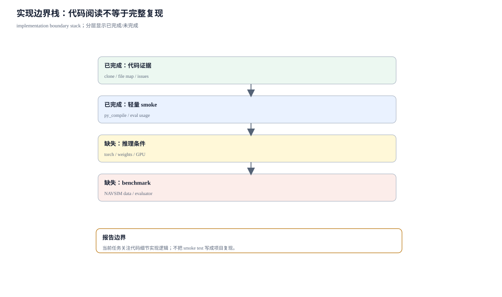
11.1 权重、训练仓和测试数据的三段式依赖
主仓库 README 标注 model weights、inference code、training code 都公开，但它们分散在 Hugging Face collection、xiaomi-research/OneVL 和 GeorgeLuImmortal/OneVL_training。复现者如果只 clone 主仓库，会得到推理和评估闭环，却拿不到完整训练脚本。这个边界必须明确，否则容易把“能跑 inference”误当成“能复现实验”。
测试数据也有区分：repo 自带 test_data 样例，可用于 smoke test；真实 NAVSIM/ROADWork/Impromptu/AR1 benchmark 需要各自数据集和格式转换。尤其 NAVSIM 不是直接由 eval_results.py 评估，而要先 `output/navsim/convert_to_eval.py` 转成官方 NAVSIM pipeline 输入。这是报告必须写清楚的下游依赖。
视觉解释还有额外依赖：`scripts/visualize_predict_image_tokens.py` 需要 Emu3.5 VisionTokenizer 的 config.yaml 和 model.ckpt。也就是说，即使轨迹推理成功，visual CoT 解码也可能因为 tokenizer 权重缺失而失败。对于调试，应该先跑 trajectory-only，再打开 language decoder，最后打开 visual decoder 和图像解码。
11.2 可重复性需要锁住 prompt 模板和 latent 数
`run_infer.sh` 中 NUM_LATENT=2、NUM_LATENT_VIS=4 看似只是默认参数，实际上必须与训练 checkpoint 对齐。latent 数变化会改变 prefix 长度和 hidden state 位置，辅助 decoder 的输入维度/位置语义都可能不匹配。答案 prefix 也有 benchmark 差异：NAVSIM 常用 `[`，APR1/嵌套列表可能用 `[[`。这些不是格式美观问题，而是输出解析和 metric 计算的前置条件。
因此复现 cheatsheet 应当固定：模型 checkpoint 路径、测试集路径、image_base_path、NUM_LATENT、NUM_LATENT_VIS、ANSWER_PREFIX、PREFIX_K、是否开启 decoder_explain、是否开启 visual_decoder_explain、max token 数。任何 sweep 如果改变这些参数，都应该被视为新实验，而不是同一设置下的误差。
11.3 评估脚本覆盖范围和空白
`eval_results.py` 明确支持 roadwork、impromptu、ar1 三类任务，并在文件头说明 NAVSIM 另走官方 pipeline。报告里把 NAVSIM 与其他 benchmark 混写会误导复现者。正确做法是把 NAVSIM 作为独立评估链：OneVL inference JSON -> convert_to_eval.py -> NAVSIM v1.0 official eval。
此外，开源仓库主要覆盖 inference outputs 的评估，没有提供完整训练日志、随机种子多次运行方差或统计显著性分析。论文结果表看起来完整，但严格复现时仍需要确认 checkpoint 是否唯一、是否有 model selection、是否有不同 seed 的 variance。这里是 OneVL 作为新发布论文的可重复性空白。
12. 可操作的后续研究方向
第一，做 causal probing：对 visual latent hidden states 做局部扰动，观察 decoded future frame、language explanation 和 trajectory 是否一致变化。如果三者不同步，就说明解释 decoder 可能只是可读投影，而不是决策因果链。
第二，比较不同未来监督目标：RGB visual token、BEV occupancy token、agent motion token、map element token。OneVL 证明未来视觉 token 有用，但没有证明它是最优世界模型监督。自动驾驶场景中，BEV/occupancy 可能比前视 RGB 更贴近规划约束。
第三，做 latency accounting：分开统计主 VLM prefill、answer generation、language decoder explanation、visual decoder token generation、VQ decode 成图各自耗时。论文主结果统计 planning latency；解释生成如果在线展示，应另列预算，避免把离线解释成本隐藏起来。
第四，接入 reactive closed-loop：把 OneVL 轨迹放入能反馈其他交通体行为的仿真中，评估它是否因为短时未来视觉监督而更保守或更鲁棒。若闭环中表现下降，说明 non-reactive benchmark 上的视觉世界监督仍不足以覆盖交互因果。
第五，训练一个更小的 ablation：固定 Qwen3-VL backbone，只比较 language-only latent、visual-only latent、dual latent、以及 answer-only，在同一数据、同一输出格式和同一 latency measurement 下跑。论文已有 ablation，但更细的训练曲线和样本效率曲线能回答“哪个监督在低数据下最重要”。
第六，建立解释一致性验证协议。对每个样本同时保存三类输出：轨迹坐标、language aux decoder 的文字解释、visual aux decoder 解码出的未来帧。然后按对象、行为、空间关系三类标签检查一致性：文字是否提到图中可见的风险对象，未来帧是否保留该对象，轨迹是否避让或跟随相应道路结构。这个协议比单独看 LLM Judge 分数更接近安全审计，因为它要求三种解释通道互相约束。若三者冲突，应该把该样本标为 latent explanation failure，而不是只按轨迹 ADE/FDE 计为成功。
第七，把 OneVL 的 latent 监督和数据规模做交互实验。论文证明 full setting 有效，但没有回答视觉辅助监督在低数据、中数据和高数据区间的边际收益是否一致。如果视觉 decoder 主要提供数据效率，它应在低数据区间收益最大；如果它主要提供泛化 inductive bias，则在分布外 benchmark 上收益更明显。这个分析能把 OneVL 从单点 SOTA 推向可预测的 scaling rule。
12.1 知乎全文证据矩阵：已读内容如何进入正文
| ID | 标题/URL | 正文字符 | 质量 | 全文 JSON | 正文融合位置 |
|---|---|---|---|---|---|
| zhihu_02_deepblue_open_source | 小米自动驾驶大模型 OneVL 全面开源，推理延迟低至 0.24 秒！ | 3853 | core_fulltext | C:\Users\tianxl\.cache\arxiv_papers\2604.18486\zhihu_fulltext\zhihu_02_deepblue_open_source.json | 0/2 方法机制：三路线统一、0.24s、开源权重代码 |
| zhihu_03_question_ygunoil | 小米开源 xiaomionevl 自动驾驶模型，率先实现多技术路线统一，这意味着什么？ - yg | 6127 | core_fulltext | C:\Users\tianxl\.cache\arxiv_papers\2604.18486\zhihu_fulltext\zhihu_03_question_ygunoil.json | 0/1 结论与问题定义：三项第一、速度叙事 |
| zhihu_04_question_liuyang | 小米开源 xiaomionevl 自动驾驶模型，率先实现多技术路线统一，这意味着什么？ - 刘杨 | 2087 | core_fulltext | C:\Users\tianxl\.cache\arxiv_papers\2604.18486\zhihu_fulltext\zhihu_04_question_liuyang.json | 1/6 横向定位：路线冲突、生态战略、跨具身数据飞轮 |
| zhihu_05_xiaomi_tech_breakthrough | 小米智驾两年三跳？2026年有啥技术新突破？ | 4274 | core_fulltext | C:\Users\tianxl\.cache\arxiv_papers\2604.18486\zhihu_fulltext\zhihu_05_xiaomi_tech_breakthrough.json | 1/2 方法机制：VLA 自回归慢、车端实时性与 Thor/电子电气架构 |
| zhihu_06_chedongxi_open_source | 小米开源最新智驾模型！核心技术团队领衔，小模型搞定复杂场景 | 4082 | core_fulltext | C:\Users\tianxl\.cache\arxiv_papers\2604.18486\zhihu_fulltext\zhihu_06_chedongxi_open_source.json | 2/7 机制与代码：不是藏 CoT、MLP 部署速度/精度取舍 |
| zhihu_11_jianyue_daily | 「建约日报 05.14」小米开源Xiaomi OneVL自动驾驶模型；宝马集团董事长齐普策正式退 | 4103 | core_fulltext | C:\Users\tianxl\.cache\arxiv_papers\2604.18486\zhihu_fulltext\zhihu_11_jianyue_daily.json | 6 横向定位：开源权重、训练/推理代码和产业时间线 |
13. 图覆盖矩阵：关键实现是否都有图
图示审计细节已移入 figure_coverage_matrix_visual_v2.json；正文只保留图示索引与必要 caption。
| 图号 | 图型 | 对应章节 | 绘制上下文 |
|---|---|---|---|
| V2-F0 | closed_loop_feedback + method_overview | 全局总览 | paper §§3-5；README inference path；training Stage 0/1/2 scripts |
| V2-F1 | contrastive_method | 核心 claim | paper Fig. 1/2；NAVSIM latency/PDM claims |
| V2-F2 | mechanism_zoom_in | 机制 | paper §3.2 latent token design；aux decoder code evidence |
| V2-F3 | loss_computation_graph | 数学/算法 | paper combined objective；training loss weights |
| V2-F4 | training_swimlane | 训练结构 | paper §4；OneVL_training README and stage scripts |
| V2-F5 | evidence_matrix | 外部来源与证据审计 | source_search_log.json；issue_pr_evidence.json；COMPLETENESS_GATE.json |
| V2-F6 | paper_vs_code_bipartite_map | 代码实现 | code_evidence_index.json；OneVL commit；OneVL_training commit |
| V2-F7 | code_call_sequence | 推理逻辑 | infer_onevl.py；run_infer.sh |
| V2-F8 | experimental_tradeoff_panel | 输出头与部署 | deployment_mlp table；FloatMLPHead code evidence |
| V2-F9 | debug_runtime_evidence | 解释一致性 | failure analysis sections；visual/language decoder evidence |
| V2-F10 | implementation_boundary_stack | 边界与风险 | code_smoke_test boundary；issue_pr_evidence.json |
14. 原论文图像清单 / Figure Inventory
| # | Label | Local file | Size | Caption |
|---|---|---|---|---|
| 1 | fig:teaser | fig_01_fig_teaser.png | 4006x884 | Accuracy and efficiency comparison across four benchmarks. Existing latent CoT methods underperform explicit CoT. OneVL is the first to surpass it while matching answer-only predic |
| 2 | fig:cot_comparison | fig_02_fig_cot_comparison.png | 1803x877 | Comparison of CoT paradigms. (a) Explicit CoT: the model generates a full chain of discrete reasoning tokens before the answer. (b) Implicit CoT: reasoning is compressed into a sma |
| 3 | fig:architecture | fig_03_fig_architecture.png | 2250x1073 | OneVL architecture. An image and structured text prompt (ego state, command, historical trajectory) are fed into the VLM. The output hidden states shown below the VLM, contains ima |
| 4 | fig:qualitative_navsim_main | fig_04_fig_qualitative_navsim_main.png | 1166x1226 | Visualizations of prediction on NAVSIM. Each plot overlays ground-truth (green!70!blackgreen) and predicted (red!70!blackred) trajectories on the front camera view. More examples c |
| 5 | fig:qualitative_roadwork_main | fig_05_fig_qualitative_roadwork_main.png | 1162x1086 | Visualizations of prediction on ROADWork. Each plot overlays ground-truth (green!70!blackgreen) and predicted (red!70!blackred) trajectories on the front camera view. More examples |
| 6 | fig:qualitative_impromptu_main | fig_06_fig_qualitative_impromptu_main.png | 1298x1060 | Visualizations of prediction on Impromptu. Each plot overlays ground-truth (green!70!blackgreen) and predicted (red!70!blackred) trajectories on the front camera view. More example |
| 7 | fig:qualitative_ar1 | fig_07_fig_qualitative_ar1.png | 1172x882 | Visualizations of prediction on Alpamayo-R1. Each plot overlays ground-truth (green!70!blackgreen) and predicted (red!70!blackred) trajectories on the front camera view. More examp |
| 8 | fig:ablation_visual_cot | fig_08_fig_ablation_visual_cot.png | 2038x636 | Visual CoT under full training vs.\ an overfitting visual auxiliary decoder. (a) Top row: with the full training recipe, latent visual tokens decode to future frames that remain sc |
| 9 | fig:navisim_example2 | fig_09_fig_navisim_example2.png | 1166x1224 | NAVSIM qualitative example 1. |
| 10 | fig:navisim_example3 | fig_10_fig_navisim_example3.png | 1166x1226 | NAVSIM qualitative example 2. |
| 11 | fig:navisim_example4 | fig_11_fig_navisim_example4.png | 1166x1224 | NAVSIM qualitative example 3. |
| 12 | fig:navisim_example5 | fig_12_fig_navisim_example5.png | 1166x1224 | NAVSIM qualitative example 4. |
| 13 | fig:navisim_example6 | fig_13_fig_navisim_example6.png | 1166x1226 | NAVSIM qualitative example 5. |
| 14 | fig:navisim_example7 | fig_14_fig_navisim_example7.png | 1166x1226 | NAVSIM qualitative example 6. |
| 15 | fig:navisim_example8 | fig_15_fig_navisim_example8.png | 1166x1226 | NAVSIM qualitative example 7. |
| 16 | fig:navisim_example9 | fig_16_fig_navisim_example9.png | 1166x1234 | NAVSIM qualitative example 8. |
| 17 | fig:navisim_example10 | fig_17_fig_navisim_example10.png | 1166x1224 | NAVSIM qualitative example 9. |
| 18 | fig:roadwork_example2 | fig_18_fig_roadwork_example2.png | 1164x1062 | ROADWork qualitative example 1. |
| 19 | fig:roadwork_example3 | fig_19_fig_roadwork_example3.png | 1164x1086 | ROADWork qualitative example 2. |
| 20 | fig:nuScences_678_8198 | fig_20_fig_nuScences_678_8198.png | 1464x1182 | Impromptu qualitative example 1. |
| 21 | fig:nuScences_927_10990 | fig_21_fig_nuScences_927_10990.png | 1305x1044 | Impromptu qualitative example 2. |
| 22 | fig:ar1_appendix_example1 | fig_22_fig_ar1_appendix_example1.png | 1164x882 | Alpamayo-R1 qualitative example. |
ONEVL_PAPER_LEARNING_SENTINEL_2604_18486_20260618